Getting Started
Welcome!
Getting started using OpenCPN consists of 3 basic steps:
- Installing OpenCPN
- Installing Nautical Charts to be read by OpenCPN
- *(Optional) Setting up GPS to "talk" to your computer and OpenCPN
Installing OpenCPN
Windows 98/ME/2000/XP/Vista/7
- Download the installation package for Windows from opencpn.org/download.
- Run the downloaded installer.
- If upgrading from a previous version of OpenCPN, there is no need to uninstall the previous version. Simply install the new version and it will upgrade OpenCPN, saving all your existing configuration and preferences.
-
If this is a new installation, click on the Toolbox icon
 and configure your GPS source, chart directories, and other settings.
and configure your GPS source, chart directories, and other settings.
Linux
32bit Ubuntu/Debian Distributions
- Download the .deb from opencpn.org/download.
-
Install the package via dpkg:
-
$ sudo dpkg -i <downloaded_file.deb> - The binary will be installed to /usr/local/bin/opencpn.
-
-
If this is a new installation, click on the Toolbox icon and configure your GPS source, chart directories, and other settings.
Other 32 and 64bit Linux Distributions and the BSD operating systems.
- Currently other distributions requires compiling the source. This will involve resolving various dependencies and is for folks comfortable with developing on Linux.
- Download the source from from opencpn.org/download or directly from the CVS server. The SourceForge link for this project is sourceforge.net/projects/opencpn/.
- Interested in maintaining a package for your favorite Linux distribution? Follow the SourceForge link above.
- This also includes the different BSD distributions. Report your experiences back to the forum.
Mac OSX
- Mac OSX developer / package maintainer currently needed. Please see http://sourceforge.net/projects/opencpn/ to get involved.
Location of Important Files
- It is important to know the location of the log file and the configuration file on your computer. If you ask questions on the forum, there is a fair chance that you will be asked about the content in these files. Once you get familiar with OpenCPN, have a look at the files!
-
On Linux the "opencpn.log" is in your home directory.
The "opencpn.conf" is in a hidden directory, called "opencpn", also in your home directory.
For a quick way to view the files you can try these commands.
$gedit `echo $HOME/opencpn.log`
$gedit `echo $HOME/.opencpn/opencpn.conf`
Of course you can swap "gedit" for your favourite editor. -
On Windows 2000, XP and Vista and Windows 7 the two files, opencpn.log and opencpn.ini are in a location governed by the environmental variable %APPDATA%.
From any command prompt enter: explorer %APPDATA%\opencpn. Windows Explorer will start with the correct folder open. -
As an alternative follow these instructions:
1 Go to Start -> Run
2 Enter Code: %APPDATA%\opencpn
3 Click OK! - On Windows 7, instead of "Run" use "Search programs and files".
- Note that some folders in the path %APPDATA% are hidden, so to be able to navigate to the log- and ini-file you may have to adjust your settings.
Installing Charts
To install charts OpenCPN must be pointed to a directory containing charts of a recognized format. Don't point OpenCPN to individual charts, you must specify the directory that contains the charts. Download some charts (see below) and organize them in a fashion that suits you. You may want to consider storing them in a directory where they will not be tampered with or moved accidentally.Open the Toolbox by clicking
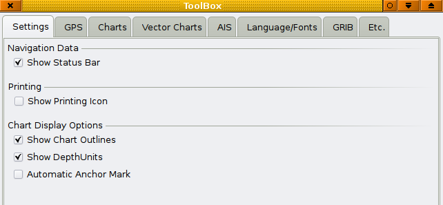
Then click the tab "Charts".
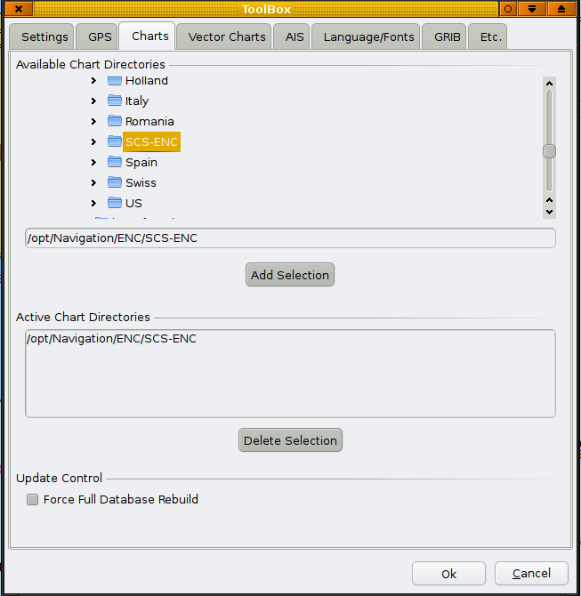
Under "Available Chart Directories" navigate to your chart-directory. Above we have found the South China Sea vector charts in the /opt/Navigation/ENC directory. When clicking the button "Add Selection" the selected chart directory appears in the box "Active Chart Directories". The screen-shots are from Linux, but this process works similar on all platforms. All that remains is to click the "Ok" button. OpenCPN will then process your selection. You can now start using your charts.
Start using your charts.
You can click and drag the chart with your mouse. The scroll wheel zooms in and out. Right clicking brings up a menu with useful actions. Exactly what the menu contains depends on the circumstances. Read the rest of the manual for a full explanation.
A few hints.
- If all is just black, with maybe some blue lines, you are viewing the background world vector shoreline chart. You must move to the geographical position of the charts you just loaded. As you come close you will see the outlines of your loaded charts, in red for raster charts and in green for S57 vector charts. Click in the rectangle created by the outlines, to activate, and view the chart.
- As you ticked the, Show Outline box, as described above, the loaded charts will be outlined in red for raster and green for vector charts. In CM93 the charts will be outlined in purple. The smallest scale charts in CM93, the Z scale and A scale charts will not be outlined, neither will all available charts be visible as outlines at the same time. The reason for this is computing speed and clarity. Generally the next level or two of larger scale charts are shown. Presently this presents a problem in a few areas, where no B scale charts are available, and large scale plans exists, directly embedded in the small scale charts. Generally in areas where only A or Z scale charts are available, expect potentially dangerous omissions. Warning, do not use CM93 small scale charts only, for navigation, without referring to other sources.
- When using a vector chart for the first time OpenCPN has to process the data, and transform the information to an internal display format. This can take some time, depending on your computer. This internal SENC chart is then saved for future use.
- Be aware that it is possible to "Over-zoom" charts in OpenCPN. A warning will appear on the display. Please respect this warning. It is recommended to not zoom more than a factor 2, for safe navigation. You will find the actual zoom-factor in the lower right-hand corner of the display.
-
It is safe and reasonably efficient to put all your charts except the CM93 database in one large directory, and set that directory in Toolbox->Charts. The CM93 database contains its own file and directory structure. The top-level directory only, of this database should be loaded, as described above, into OpenCPN.
If you do a lot of chart downloads, updates, etc., then it will be faster to break the charts folder into smaller groups, and specify them individually in the Toolbox->Charts dialog. - The option "Force Full Database Rebuild" is mainly aimed at users converting charts, in a situation where minor changes or corrections are made.
-
OpenCPN, supports Mercator charts, Transverse Mercator Charts and Polyconical Charts (US Great Lakes). Charts using other projections will be displayed as if the were Mercator charts, except for the fact that they will not be used for quilting. Most charts are using Mercator projection, so this limitation is not to bad.
Other projections, such as Gnomonic, are mainly used in larger scale charts, for smaller areas, for example harbor plans, in scales larger than 1:50,000.
The errors introduced in OpenCPN by treating these charts as Mercator are generally small, but be aware of this limitation.
Chart Formats
OpenCPN supported chart formats:
BSB / RNC / KAP Versions 1, 2 and 3.
(BSB Version 4 and later are not supported due to proprietary encryption algorithms.)
NOS/GEO Version 1 Subsequent versions are probably supported but need to be tested. However, this format is obsolete for new charts.
CM93 Version 2.
(C-map Version 3 and later are not supported.)
S57/S52 (ENC).
(S63 Encrypted ENC is not supported. This is the format for the majority of newly produced vector charts from many national hydrographic offices. S63 charts are exactly the same as S57 except the they are encrypted to keep them from being illegally distributed.)
Other formats, that with some effort, can be used.
Generally many chart pictures in gif, jpeg, png, tif and other formats can be used, when properly geo-referenced, to generate KAP file (BSB / RNC) that OpenCPN can display. For the details about this process see the chart thread in the forum. Also, make sure to browse around the forum as there are a handfull of other interesting chart related threads.
WCI charts generated with SeaClear and MapCal can also be transformed to BSB charts and used by OpenCPN. The key is to open a WCI chart in MapCal and convert it to a BMP picture, and then transform this picture to a tiff file, using for example ImageMagic.
Before Maptech started to produce BSB charts the HDR format was used in the late eighties to mid nineties. These charts consists of many picture tiles in pcx format, more than 100 tiles is not unusual. The tiles can be merged to one picture and then used as any other picture to make an OpenCPN compatible chart. For details on this process see the Chart Conversion Manual and this post and the following posts in the forum.
The HDR format is from an era when computer-memory and processing power were less powerful than today, as a consequence these charts are not of the same quality as more modern charts. Furthermore, most of these charts are not using WGS84 as reference datum. These charts should not be the first choice, but can be useful if nothing else is available.
Other formats that are not supported.
The Hydrographic Chart Raster Format (HCRF), used by the United Kingdom Hydrographic Offices' ARCS (Admiralty Raster Chart Service), Australian Hydrographic Services' Seafarer products and the NZMariner, New Zealands Official charts, are not supported. This is also due to proprietary encryption algorithms and copyright issues.
Mapmedia's various chart formats are not supported, for the same reasons as for the other proprietary charts.
Chart sources
Where to find free charts
- To get you started quickly, here are three sample charts from Puerto Rico: one, two and three. Right click and use "Save Link As", or similar. Just clicking shows you the actual file as a text file, this is an advanced subject, to be treated later.
- For those interested in U.S. waters, S57 vector charts are now available for free download from NOAA. Find all the charts you need, both raster (RNC) and ENC's, for your region through NOAA OCS Website at : http://www.nauticalcharts.noaa.gov/staff/charts.htm.
- Links to a wide selection of ENC's for U.S. inland waters and other countries are available at : http://www.dacust.com/inlandwaters/index.html.
- Brazil publishes free raster charts (RNC) for their whole coast and new charts for inland water is published regularly.There is also coverage for part of Antarctica. Here is a direct link to the download page: Brazilean Charts. Don't miss the link to CARTAS DE RIOS at the bottom of this page.
-
The East Asia Hydrographic Commission is providing free offshore S57 vector charts for the South China Sea area at : www.scsenc.org.hk/main.htm . The motivation for releasing these charts is well worth reading.
Realizing that official and high quality small scale ENCs conforming with the established IHO standard were not available for the SCS, the EAHC MSs decided to cooperate closely and resolve the situation so that mariners could use most up-to-date chart information for voyage planning and enhancing safety of navigation, rather than resorted to some commercially developed electronic products which were either prepared in proprietary formats, or containing unofficial data with very infrequent updating.
- Colombia and Australia publishes sample S57 single charts.
- New Zealand publishes high quality tiff pictures of almost all their charts. From a start, in the last few month of 2009, the work to create OpenCPN compatible charts from these pictures has quickly matured. For the latest on this subject, check the "Chart" thread in the Forum. All NZ charts are now available for OpenCPN here.
-
Many European countries publishes free S57 ENC charts for their inland waterways:
Austria
Belgium
Bulgaria
Croatia
Czech Republic
Hungary
Netherlands
Romania
Serbia
Switzerland
Setting Up GPS
Windows 98/ME/2000/XP/Vista/7
To use OpenCPN with a GPS, a GPS receiver is needed.
There are a variety of possible choices for a GPS receiver:
- A computer, such as a Sony Vaio P has a built in GPS receiver
- A NMEA Expander to amplify a nmea stream to multiple listeners
- A handheld GPS receiver
- A dedicated GPS receiver
The remainder of this section describes using OpenCPN with a dedicated GPS receiver, however, the instructions for a dedicated receiver will be similar for any serial/USB connected NMEA data stream.
A Dedicated GPS Receiver
There are several companies making dedicated GPS receivers. The Supplementary Hardware section for GPS devices lists several manufacturers.
NMEA has traditionally been implemented as a serial protocol and therefore, even if a USB connection is used, there needs to be a USB to Serial Port conversion. The specific driver for the each GPS receiver will handle this conversion.
Configuring BU-353
It is not necessary to use the installation disk to setup the BU-353. Following the steps listed below will result in the latest driver being installed.
- Download the latest driver from Prolific - http://www.prolific.com.tw/Eng/downloads.asp?ID=31
- Unzip and install the driver
- Plug in the BU-353.
-
Start -> (Right Click) My Computer -> Properties -> Hardware ->Device Manager
or Start->Run devmgmt.msc - Expand Ports
-
Look for the “Prolific USB-to-Serial Comm Port” and note the com port number (e.g., COM4)

- Right click on the “Prolific USB-to-Serial Comm Port”. Choose Driver
-
Select 4800 bits per second, 8 data bits, None parity, 1 stop bit, and None for Flow Control

- Start OpenCPN
-
Click on the ToolBox Icon
- Select GPS
- Under NMEA Data Source select the Com port noted in #6
- Choose OK
- Select Auto Follow to center the map over your GPS location
Troubleshooting
There is a small LED located on the BU-353. If the LED is off there is no power being received. Check the connection.
If the LED is solid it indicates the BU-353 is searching for a GPS signal. Try moving the GPS receiver to a clear location.
If the LED is flashing it indicates the BU-353 has a position fix and is transmitting data.
- Try viewing the NMEA data stream in OpenCPN. Choose ToolBox->GPS->click Show GPS/NMEA Data Stream Window
- Alternatively, a diagnostic program is included on the installation CD called GPSInfo.exe. Launch this program to install the diagnostic utility.
If it appears that the NMEA data stream is being received, the most likely issue is that OpenCPN is not centered over your location. Click AutoFollow to center the map at your GPS location.
Known Issues
If you change the USB port for the GPS receiver Prolific will reassign the COM port number. This will require repeating steps 4-12 above.
On some computer / GPS receiver combinations when the computer resumes from Stand By the GPS receiver will no longer transmit its NMEA data stream.
A workaround for this issue is provided by using a COM port splitter such as XPort http://curioustech.home.insightbb.com/xport.html
- Download XPort.
- Unzip it to a folder of your choice
- Double Click XPort.exe
- Set the Baud Rate to 4800
- Under Enable Ports add an entry for COM10
- Click “Find GPS”. The port returned should match the port identified in Step #6 in the Configuring BU-353 Section
- Select Prolific USB-to-Serial Comm Port in the check box section
- Return to OpenCPN
-
Click on the ToolBox Icon
- Select GPS
-
Under NMEA Data Source change the Com port to COM10
Linux
Ubuntu/Debian Distributions
-
Install the gpsd and gpsd-clients packages
-
$ sudo apt-get install gpsd gpsd-clients
- Go to Toolbox-->GPS and select "Network GPSD" as your "NMEA Data Source", unless you have a gpsd version in the 2.9.x series( Ubuntu 10.04 and other new distros). In this case choose Toolbox-->GPS --> "NMEA Data Source" -->"Network LIBGPS". Note that in this case you also have to use OpenCPN version greater than 2.1.0 Beta build 530.
- On Ubuntu 9.10 and later, that is realy all you have to do. When you plug in your gps this will trigger gpsd to start.
- If this this doesn't work for you, follow the instructions below.
-
Check first if gpsd is working:
$ ps aux | grep gpsd
nobody 12338 0.3 0.1 4124 1448 ? S<s 18:31 0:00 gpsd -F /var/run/gpsd.sock
you 12356 0.0 0.0 3036 800 pts/3 S+ 18:32 0:00 grep --color=tty -d skip gpsd
This or similar responses indicate that gpsd is running. If you only have something like the second line, ....it is not running.
-
Determine which device your GPS is on your linux system by checking the startup. Look for a line that says something about GPS and /dev/ttyUSB#
-
$ dmesgOr even better, after connecting a gps mouse, BU-353, we look for a dmesg by running this command.
$ dmesg | grep tty and get this response back. [13616.095305] usb 2-3: pl2303 converter now attached to ttyUSB0
-
-
Add a script to start gpsd. I saved mine as startgps and set thet executeable attribute. Edit line 3 to match your device, ie /dev/ttyUSB0
-
#!/bin/sh sudo killall gpsd sudo gpsd -n -D 2 /dev/ttyUSB0 xgps -speedunits knots -l
-
-
Run the script:
-
$ ./startgps
-
and configure your GPS source, chart directories, and other settings.
Other Distributions
- Install gpsd from source. More information is available here: http://gpsd.berlios.de/
Bluetooth GPS Ubuntu.
If you have a bluetooth GPS you will need to first configure it through the standard Ubuntu Bluetooth "set up new device " proceedure.
Once you have done that you will need to find what the address of the GPS is. To do that you run this command.
sudo hcitool scan
it will then start looking for the Bluetooth GPS and hopefully find your GPS. You should see something similar.
Scanning ...
00:1C:88:10:D3:4D iBT-GPS
In this case i have a IBT-GPS at address 00:1C:88:10:D3:4D (Your GPS address will be different)
Next we have to bind the GPS address to a "virtual" device OpenCPN understands in this case rfcomm0
we do this with the following command.
sudo rfcomm bind /dev/rfcomm0 00:1C:88:10:D3:4D Note put your GPS address in this line
It is my understanding you do not have to run these commands each time your linux is restarted as it will remeber your GPS address.
Now all you need to do is go into OpenCPN Toolbox and select GPS
Now in the NMEA Data Source options select from the pulldown menu
/dev/rfcomm0
Thats it you should now have a Bluetooth GPS Connected.
Mac OSX
 This article is in not complete. You are welcome to assist in its construction by editing it as well. Everyone is allowed to edit after creating an account and/or logging in.
This article is in not complete. You are welcome to assist in its construction by editing it as well. Everyone is allowed to edit after creating an account and/or logging in.
- Add howto here
-
Install the gpsd and gpsd-clients packages
GPS Status
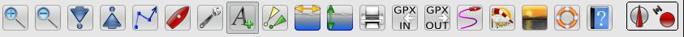The GPS staus is indicated all the way to the right in the toolbar.
Basic Features
Let's take a look at some of OpenCPN's basic features.Toolbar Buttons
From left to right:
 Zoom In (Learn more)
Zoom In (Learn more)
 Zoom Out (Learn more)
Zoom Out (Learn more)
 Scale Next Chart Down (Learn more)
Scale Next Chart Down (Learn more)
 Scale Next Chart Up (Learn more)
Scale Next Chart Up (Learn more)
 Create Route (Learn more)
Create Route (Learn more)
 Find/Follow Boat (Learn more)
Find/Follow Boat (Learn more)
 Launch Toolbox(Learn more)
Launch Toolbox(Learn more)
 Show Vector Text Labels on Vector Chart.
Show Vector Text Labels on Vector Chart.
 Show AIS Targets* *** (Learn more)
Show AIS Targets* *** (Learn more)
 Show/Hide Currents On Chart (Learn more)
Show/Hide Currents On Chart (Learn more)
 Show/Hide Tides On Chart (Learn more)
Show/Hide Tides On Chart (Learn more)
 Print**
Print**
Import GPX File**(Learn more)
Export GPX File**(Learn more)
 Toggle Track On/Off**(Learn more)
Toggle Track On/Off**(Learn more)
 Grib Overlay**(Learn more)
Grib Overlay**(Learn more)
 Change Color Scheme
Change Color Scheme
 Drop Man Over Board(MOB) marker(Learn more)
Drop Man Over Board(MOB) marker(Learn more)
 About OpenCPN and Help File
About OpenCPN and Help File
 Course Up/North Up***(Learn more)
Course Up/North Up***(Learn more)
 GPS status***(Learn more)
GPS status***(Learn more)
*Note 1: AIS button is available if an Ais Data Port is defined in the ToolBox
**Note 2: These icons can be enabled or disabled from the ToolBox
Printer 'ToolBox-Settings-Show Printing Icon' to hide or un-hide.
GPX IN, and GPX OUT 'ToolBox-Etc.-Show GPX Icons' to hide or un-hide.
Tracks 'ToolBox-Etc.-Show Track Icon' to hide or un-hide.
Grib 'ToolBox-GRIB' to hide or un-hide.
*** Note 3: These icons change depending on status.
Zoom in & out

 These buttons allow you to zoom in and out on the chart currently being displayed.
These buttons allow you to zoom in and out on the chart currently being displayed.
 Will zoom the chart in for more detail.
Will zoom the chart in for more detail.
 Will zoom the chart view out for more area.
Will zoom the chart view out for more area.
Alternatively, the + and - keys on your keyboard will zoom in and out. If you have a mouse with a scroll wheel, it can also be used to quickly zoom in and out.
Scaling Charts

 These buttons will allow you to change the scale of chart you are using.
These buttons will allow you to change the scale of chart you are using.
 Will scale down/out to the next chart of less detail but greater area, if available, within the current view
Will scale down/out to the next chart of less detail but greater area, if available, within the current view
 Will scale up/in to the next chart of greater detail but less area, if available, within the current view
Will scale up/in to the next chart of greater detail but less area, if available, within the current view
Hint: Scaling down and up coresponds to available charts left and right on the status bar.

Status Bar
On the bottom is the Status Bar(s). Activated from 'Tool Box-Show Status Bar'.
The top line, 'Chart Selection Bar', has the following description.
If a larger scale chart (large scale = greater detail in a smaller area) is available for the location of your mouse pointer, you will see more than one segmented bar. The segmented color bars in the Status Bar represent:
- Blue for Raster
- Green For ENC's
- Brown/Yellow for CM93 charts
- The current chart displays as a lighter shade of its color, or if quilting is active, the charts currently making up the quilt are displayd in lighter shade.
When you hover the mouse pointer over the bar, and not in quilting mode, a thumbnail of the chart will appear under the SCALE IN/OUT icons and a chart information box will pop up just above the button. If quilting is on, instead of a thumbnail, the chart represented by the button will be highlighted in a transparent reddish color. By clicking on the appropriate bar, or using the appropriate HOT KEYS, you will switch to the chart shown in the thumbnail. This feature is especially useful if you wish to view an ENC or a Raster chart of the same area.

The bottom line starting from the left, has the position of the GPS that feeds OpenCPN (your ship or boat). SOG, COG, Cursor (position), From Ownship and TrueScale are in other boxes. If the true scale is missing on the far right, the chart quilting feature is activated.
The buttons are displaying a lot more information however.
 These buttons shows that the two charts are Transverse Mercator.
These buttons shows that the two charts are Transverse Mercator.
 This button indicates that the chart is a Poly Conic chart.
This button indicates that the chart is a Poly Conic chart.
 This button shows that the chart is skewed, and not Norh Up.
This button shows that the chart is skewed, and not Norh Up.
 This chart is excluded from quilting because of user action. Right
This chart is excluded from quilting because of user action. Right
click to include in quilting again.
 The raster chart represented by this button don't participate in the quilt because it is hidden by other, larger scale charts. Vector charts are represented similar.
The raster chart represented by this button don't participate in the quilt because it is hidden by other, larger scale charts. Vector charts are represented similar.
To illustrate a lot of this, here is a screen shot in quilting mode.

The screen is a quilt of two Polyconical charts. Hovering the mouse pointer over the left chart-button highlights the lager scale chart for Manitowoc. Two smaller scale charts that cover the area displayed on the screen are included in the quilt, but are invisible as they are covered by the larger scale charts. To view these charts, right-click anywhere on a chart in the quilt and select "Remove this chart from quilt", one of these charts will now be shown in the quilt.
The Brown right most button shows that CM93 version 2, charts are available for the area, but not currently displayed.
The information box shows relevant information about the chart. We can see that the chart is Polyconic, and because of this a warning is displayed for poor accuracy. The reason is, that although Polyconic charts are allowed to participate in quilting, the result is not totally free from errors, however small.
Auto Follow and Display Orientation
-
Clicking the Auto Follow button
 will center the chart directly on your vessel's current GPS location.
will center the chart directly on your vessel's current GPS location.
- This is useful for two different situations:
- When you have panned the map away from your current location and want to quickly move back to your vessel.
- When underway, this will keep the display on the chart around your vessel, with the boat at the center of the chart.
-
Note: Panning the chart will disable this mode. Simply click again to turn Auto Follow mode back on.
- The display can be oriented two ways, normally it is North Up but Course Up is an alternative. Course up can be activated by ticking Toolbox->Settings->Course UP Mode.
-
 This icon to the far right in the ToolBar indicates that the display is in North Up mode. This is a toggle button. Click it and ...
This icon to the far right in the ToolBar indicates that the display is in North Up mode. This is a toggle button. Click it and ...
-
 and it turns red for Course Up mode. These setting can also be controlled in the ToolBox -> Settings -> Chart Display Options ->Course Up Mode
and it turns red for Course Up mode. These setting can also be controlled in the ToolBox -> Settings -> Chart Display Options ->Course Up Mode
- Look Ahead! To see more of the chart in front of the boat, activate ToolBox -> Settings -> Chart Display Options ->Look Ahead Mode. Your own boat will no longer be in the center of the screen. Instead it will be located away from the center, in the opposite direction to your present gps course(COG).
Tides and Currents
Notes
- Tide and Current predictions are not available for all areas.
- As with all predictions, the displayed values are calculated using mathematical models and actual tides and currents will vary
Enable Tides and Currents Display
-
Click the toolbar button
 to see tide stations.
to see tide stations.
-
Select
 to see current stations.
to see current stations.
- Important: tide and currents will not be displayed unless these toolbar buttons are selected.
Displaying Tides
- Available tide stations will show on the chart as green graphs with a "T" logo:

-
Right click the green icon
 to see tidal graph:
to see tidal graph:

Displaying Currents
- Available current stations will show on the chart as orange arrows:

- Arrow indicates current direction and strength - the bigger the arrow, the more current.
-
Right click the orange box
 to see current graph:
to see current graph:

Hot Keys
- Arrow Keys, Moves the chart view
- Alt + Arrow Keys, Moves the chart view in very small steps.
- + or Ctrl + Z Zoom In
- - or Ctrl + X Zoom Out
- F2 Toggle Auto Follow ON/OFF
- F3 or Ctrl + S Show / hide ENC Text
- F4 Starts the measure tool. Escape : Stops it.
- F5 Toggle Screen Brightness
- F7 or Ctrl + Left-Arrow Larger Scale Chart (Scale In)
- F8 or Ctrl + Right-Arrow Smaller Scale Chart (Scale Out)
- F9 Chart Quilting on/off
- F12 or Ctrl + O Show/Hide Chart Outlines
- Ctrl + L-Arrow or F7 Larger Scale Chart (Scale In)
- Ctrl + M Drop Marker at current cursor position.
- Ctrl + O or F12 Show/Hide Chart Outlines
- Ctrl + Q Quits OpenCPN
- Ctrl + R-Arrow or F8 Smaller Scale Chart (Scale Out)
- Ctrl + S or F3 Show / hide ENC Text
- Ctrl +space Man Over Board, sets MOB Marker at current GPS position.
Ship Track
Toggling the track icon  turns tracking on and off. Tracking means that a record is kept of the vessels position as it proceeds. A trail is left behind the vessel. To display the tracking icon tick the box Toolbox->Etc->Show Track Icon. Below the "Show Track icon" check box there are two more options related to track recording. You may set how often a track point is recorded every X number of seconds or X Nautical miles.
turns tracking on and off. Tracking means that a record is kept of the vessels position as it proceeds. A trail is left behind the vessel. To display the tracking icon tick the box Toolbox->Etc->Show Track Icon. Below the "Show Track icon" check box there are two more options related to track recording. You may set how often a track point is recorded every X number of seconds or X Nautical miles.

Recorded tracks can be import, exported and managed using the gpx in and gpx out buttons and route manager.
When right clicking on a track you can select Track Properties from the menu, and a new dialog pops up. The same thing can be achieved through the Route Manager.
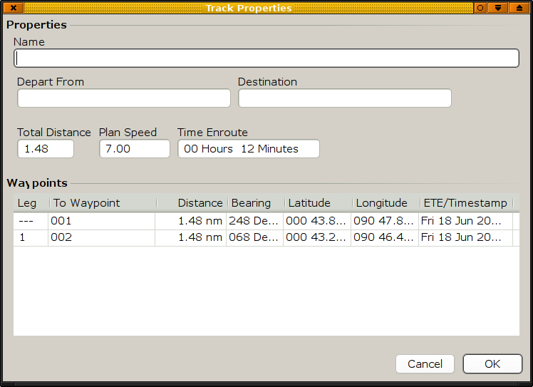
Man Over Board
Drop a Man Over Board Marker at your present position by hitting the Man Over Board Button
Advanced Features
Let's take a look at some of OpenCPN's advanced features.Anchor Watch
Anchor watch can be set on any mark that you have created with OpenCPN, as long as the boat is within 5 cables of this mark. This means that the Anchor watch items, on the right click menu, will only be visible if your boat is within 0.5 nautical miles of any mark. A maximum of two marks can have anchor watch set at the same time.
This feature can be used in other situations than just anchoring, but keeping an eye on your anchor, and making sure it isn't dragging, is the main purpose. Below we are using the "Man Overboard" icon to mark the anchor, this is just an easy way, and not necessary for the anchor watch to work.To learn how it works let's make a dry run to a nice trade wind anchorage.

After circling around and exploring the bay, we know where we want to drop our anchor.
At the chosen spot we drop the anchor, at the same time we click the man overboard icon on OpenCPN to mark the point.

The wind, ENE at 15 kts let us drift back until we are satisfied with our scope. A burst in reverse convinces us that the anchor is set, later confirmed by a leisurely snorkeling over the anchor. Time to sort out the anchor watch

Right click on the man over board mark, choose properties, this brings up the "Mark Properties" dialog. We have to change a few things here to make it worthwhile setting the anchor watch. "Mark Name" is changed from "MAN OVERBOARD" to the watch circle in meters. In our case we have changed this to 60. We have 40 m of chain out, our gps antennae on our 40 footer sits at the pushpit, some minor gps uncertainties and a few extra meters for our anchor to dig in, is our reasoning for this. We also change the mark icon to something better than the life-buoy.

We right click on the mark once again, and choose "Set Anchor Watch" from the menu.
See picture above. The anchor watch is now active, and an alarm will be set off if the boat for some reason exits the circle. To deactivate the anchor watch, right click on the mark and select "Clear Anchor Watch".
To get protection from the wind and a bit of northerly swell, we have really anchored to close to the beach. To keep an eye on this potential danger we set another mark on the beach.

This time we set the "Mark Name" to -100, this means that if the boat comes within 100 meters of this mark, the alarm is set off.

An hour later, after a heavy squall passed, the wind goes light and flukey. The boat drifts towards the beach and the anchor alarm sounds and comes up on our computer screen.
The alarm sound is the same as the AIS warning sound and is set in the ToolBox under the AIS tab.

This is what happens if you activate the anchor watch without changing the name, the alarm is instantly activated. Clear the anchor watch and read from the beginning of the page.
Automatic Identification System - AIS
For a general introduction to AIS Wikipedia is a god place to start.
The screendump below gives you a first feel for how AIS targets are presented and used in OpenCPN.

The Lookahead mode is activated here and our own vessel is proceeding 352 deg at 13 kts, leaving an activated track behind, and projecting a dashed line ahead representing the course. This ends in a dot, that represents where we will be in 6 minutes, or 1.3 nautical miles ahead. We are meeting a vessel, steaming in the opposite direction following the traffic separation. This target also has a line and a dot in-front of it representing course and where it will be in 6 minutes(user configurable). The two blue dots with a red/yellow line between them, represents where the vessels will be at CPA - closest point of approach, or when the are nearest each other, with present courses and speeds. The meeting vessel is red, as it is a potential danger to us.
A lot of information about the vessels that transmits AIS signals and are displayed on the chart, is available.
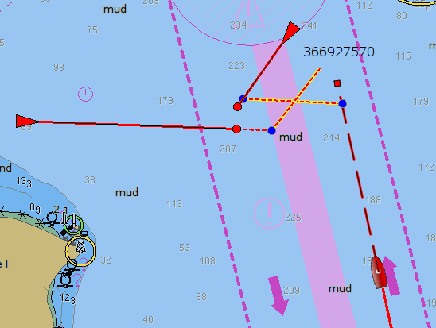
The cursor is on top of the the meeting vessel on a SW course. As we have not yet received full information, this can take a while, we don't get the name but an id number, the so called MMSI number, instead.

This vessel is identified by name, and has a green color, as it does not represent any danger to our navigation.

If we instead of just hovering the cursor on an object, right click, the menu item AIS Target Query brings up the dialog above. A lot of relevant information is displayed. TCPA is the time until CPA, how long before we are at the closest point to the other vessel.

All the bells and whistles are activated! A new target appears behind an island on our port bow, OpenCPN sounds an alarm and draws a jagged circle around the new target. An AIS alert box with all the information about the new target pops up. We can silence the noise but, has to acknowledge before the box disappears.
Another way to present the AIS information. The AIS target list is available through the right click menu.
The ToolBox AIS Tab
This tab controls the behavior of many thing in the AIS display. There are no "best" settings. It all depend on where you are, what kind of navigation you are into and what kind of vessel you are on. It is your responsibility to evaluate this.
AIS data port: Select your AIS input port on your computer. When this is set to anything but "None", the AIS button appears in the ToolBar.
 The default button, shows when there are no AIS input and when AIS is working normally.
The default button, shows when there are no AIS input and when AIS is working normally.
 AIS input is working, but no AIS information is shown on the chart. With a working AIS input these two buttons toggles.
AIS input is working, but no AIS information is shown on the chart. With a working AIS input these two buttons toggles.
 An alarm because the AIS input is no longer working, and the display is not updated.
An alarm because the AIS input is no longer working, and the display is not updated.
CPA calculation: Rules for how and when the Closest Point of Approach- CPA (when two vessels are nearest each other) is calculated. There are three tick boxes, which can be activated with user set values.
1. If the vessel is far away it is less interesting to calculate CPA. In a busy waterway this could cut down on clutter and processing speed if a reasonable value is set.
2. Similar arguments to No 1. This controls when a warning for minimum CPA distance is given.
3. Similar to No 2 this controls the alarm based on a minimum time to CPA. A target is regarded as lost if regular transmissions is not received, updating the vessels status.
Lost Targets: Rules for how lost targets should be handled on the display.
1. Target is regarded as lost if no transmission are received for the number of minutes set here, the target will change on the display and have a black bar across.
2. The lost target will be removed from the display after the number of minutes set here.
Display: If and how a vessel course and speed should be displayed and stationary vessels should be on the screen.
1. An arrow will be shown in front of the vessel representing it's COG (Course Over Ground). The length of this arrow and the dot at the end of it represents the calculated position in the number of minutes set here. Set easily calculated values. If a vessel approaches you doing 15 kts and the time is set to 6 minutes, the dot will be 1.5 nautical miles ahead of the vessel.
2. An anchored or moored target  will not be displayed if the speed is less than the value set here.
will not be displayed if the speed is less than the value set here.
CPA/TCPA Alerts: When an alert is triggered, a jagged circle in red is drawn around the target that set off the alarm. Additional events can be set here, drawing more attention to the alarm. For practical navigation, make sure your alarm sound is set.
1. Shows an alert dialog on the screen with target information when an alarm is triggered.
2. Sounds an alarm when an alarm is triggered.
3. Don't show alarms for anchored and moored targets.
Button 1. Select an alarm that suits you. This alarm will also be used if an anchor watch is set. Users can ad there own sound files.
Button 2. Test the selected sound and make sure this important feature is working
When exactly is an alarm activated?
An alert is set off if your boat is approaching the CPA, the blue dot on the extension of the course line, and the previously discussed set of conditions are met. Once the distance to the CPA increases, this happens when the involved vessels has passed each other, the alarm stops, even if the other conditions still apply.
+++
Quick Reference for targets:
 Potential Danger.
Potential Danger.
 No Danger. Not Identified ( Name not received)
No Danger. Not Identified ( Name not received)
 No Danger. Identified
No Danger. Identified
Lost Target
Anchored or moored
 The V-shape stern indicates a Class B target. Tugboats and pilot boats very often carry Class B transponders. These are often designed specifically for small commercial boats, fishing boats and pleasure crafts.
The V-shape stern indicates a Class B target. Tugboats and pilot boats very often carry Class B transponders. These are often designed specifically for small commercial boats, fishing boats and pleasure crafts.
- a diamond with plus inside for NavAids.
Chart Quilting
Chart quilting is a way to display parts of several charts together on the screen, redrawn to the same scale.Quick Start
Hit F9 to get into quilting mode. Zooming in, automatically brings up larger scale charts,
if available. Panning reveals a continuous quilt of the available charts. If you started with a raster chart, only raster-charts, and perhaps CM93, will be in the quilt. The same logic applies to S57 Vector Charts (ENCS). Make sure you are familiar with the status bar as this will help you interpret all available information. The quilt, like a single chart can be displayed North Up or Course Up read more here.
More details
What is the use of this feature?

In single chart mode, getting near the edge of the chart there is no information outside the chart.

The situation changes dramatically when quilting mode is activated. The amount of relevant information on the screen increases.
Displaying charts
OpenCPN has two modes of displaying charts, single chart mode and quilting mode.
To activatechart quilting go to Toolbox -> Settings -> Chart Display Options and tick the box "Enable Chart Quilting", tick the box "Show Chart Outlines" at the same time as this will help you see which chart mode is active.
Alternatively chart quilting mode can be toggled on/off with the "F9" key.
Is Chart quilting on?
When quilting is on, all chart outlines disappear.
When hovering with the mouse pointer over a chart button in single chart mode, a thumbnail of the chart is displayed in the upper left corner of the screen. At the same time an information box pops up above the button with details about the chart. This changes with quilting as the thumbnail is replaced with a high-lightning of the charts part in the quilt with a transparent reddish color.
The exception to the last rule is CM93 charts. When an area is only covered by CM93 charts, indicated by a long yellow chart button in the status bar, and in quilting mode, no info-box is displayed and no reddish highlighting is taking place.
More than one chart can be displayed and active at the same time, on the picture above, for example there are three pale blue buttons, as there are three raster-charts in this quilt. In single mode only one chart button is highlighted at a time.
Depth units that is normally shown in the upper right corner of the display, if activated in the toolbox, is only displayed in quilting mode if all participating charts uses the same unit.
Zoom level, normally displayed on the far right on the Status bar, is not present in quilting.
Many of these features are illustrated in this screen-dump.

This is a quilt consisting of three raster charts, two that are actually displayed and one smaller scale chart that is hidden behind the larger scaled charts of St Croix.
The mouse pointer is over the middle raster chart and the chart information box is shown, together with the red highlighting of the chart on the screen.
No depth unit is shown in the quilt as the left chart is in Feet and the right in Fathoms an parts thereof. Notice the lack of zoom level in the status bar, a quilt , by definition, consists of several different zoom levels.
Which charts are quilted?
There are several rules built into OpenCPN governing exactly how different charts reacts to the quilting mode.
Raster charts and Vector charts are quilted separately and don't mix together. You can quilt either raster charts or vector charts, but not both at the same time. The exception to this rule is that CM93 ver2 charts, if available, are shown if no other chart cover exists for a displayed area, for both raster- and vector- chart quilting.
CM93 ver2 charts can be quilted separately.
Mercator Charts are always quilted in quilting mode
Polyconic Charts, are allowed in a quilt together with Mercator charts, but a warning is issued in the chart information box, for poor georeferencing. I other words expect lower accuracy from the chart.
Skewed Charts are allowed in the quilt as long as it doesn't deviate more than 5 degrees
from North Up.
Transverse Mercator Charts are not quilted at all, neither with other charts nor among themselves.
User control.
Users can control if an individual chart, is allowed in the quilt or not. Right clicking on any chart in a quilt and clicking "Remove this chart from quilt" on the pop up menu, removes the chart from the quilt. The chart button in the Status bar changes to
To activate the chart again right click this button an then click "Ad this chart to quilt"
GRIB Weather
OpenCPN has a built in lightweight grib weather file viewer, with a limited set of features, aimed at being useful while under way. It is not possible to download grib files from within OpenCPN. Many external sources for grib files are available however, Franks-Weather is a good starting point.-
To display grib files as an overlay on your normal charts you have to first activate the grib icon

-
Go to and select the GRIB tab.
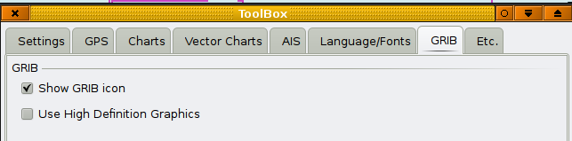
- Tick the "Show GRIB tab" box. Tick the next box as well, unless you are on old hardware. Not ticking the "High Definition Graphics" box can help to speed up the grib display, in such cases.
-
 Here you see the Grib icon in the tool bar.
Here you see the Grib icon in the tool bar.
- The Next step is to click the icon, which brings up the Grib Display Control. Use the upper part of this window to navigate to, and select your grib files. The grib files will then be appear in the control. See picture above.
- Click on the ">" in front of the gribfile. The individual forecasts contained in the gribfile, is then displayed under the gribfile heading.
- Click on one of the forecasts and it will be displayed. When you move the cursor over the grib display, the values for wind etc will be displayed for the cursor position, in the lower part of the "Grib Display Control". Here you can select what grib values to view. Note that not all gribfiles contains wave data.
- OpenCPN will display most grib file formats, but as it is a fairly new feature, bug reports are very welcome.
What is a grib file?
- If you are not familiar with grib weather files, make sure you understand the basics, before you start to use them. It is essential to understand the limitations of weather forecasts in the grib format. It is also worth pointing out that gribs are not reliable near tropical systems.
- To get started with gribs and to find sources for downloads, check Franks-Weather.
- A very good book is David Burch: Modern Marine Weather, with a thorough treatment of the subject.
- A few files including lectures on tropical weather and gribs are available here.
- ZyGrib is a free and open-source software(FOSS) dedicated grib viewer.
Routes and Marks
Routes
 Will initiate the creation of a route. When clicked the cursor changes to a (
Will initiate the creation of a route. When clicked the cursor changes to a ( ) pencil. Left click along the desired route you want to make. This will leave sequential waypoints as you click along. If your desired route extends off the currently displayed chart, move the route cursor into the desired area. You can zoom in and out with the mouse scroll wheel or keyboard +/- keys during route creating. You can also right click and select 'MAX DETAIL HERE' or 'Scale Out' during route creation. When finished right click and choose end route from the context menu.
) pencil. Left click along the desired route you want to make. This will leave sequential waypoints as you click along. If your desired route extends off the currently displayed chart, move the route cursor into the desired area. You can zoom in and out with the mouse scroll wheel or keyboard +/- keys during route creating. You can also right click and select 'MAX DETAIL HERE' or 'Scale Out' during route creation. When finished right click and choose end route from the context menu. 
The right click menu is context sensitive, exactly what you get depend on what sort of chart it is and if quilting is activated, for example.
You should now have an inacitve (Blue) route. Active routes are Red, inactivated routes are Blue.
Multiple Routes
OpenCPN currently has no provision to hide routes, so all your routes will show on the chart all the time.
To keep the chart clear of useful but un-needed routes follow these steps:
• Create a folder called 'GPX_Routes.'
• Create your route.
• Turn on In and Out GPX icons with Tool Box-Etc-Show GPX Icons.
• 'GPX OUT' with a descriptive file name and save it in a created folder called GPX_Routes.
• Delete the route from the chart.
• You can export all your routes as one big file or export and delete a route as you create them
• When needed simply use the 'GPX IN' to open the route file.
• These actions can also be done through the Route Manager.
To get rid of the way points left on the chart when a route has been imported and then deleted.
1. Right-click on any waypoint in the route and select 'Delete All waypoints'.
2. Say 'Yes' to: 'Are you sure you want to delete <ALL> waypoints?'
3. Right-click on the route line and select either 'Delete route' or 'Delete all routes'.
4. Answer in the affirmative.
Marks...
You can create a mark by right-clicking anywhere in the map, and selecting "Drop Mark Here" from the menu. The mark will have a triangle icon, to change that right-click the icon and select "Mark Properties".
You can move the mark by dragging it around.
When creating routes, openCPN will ask if it should use a nearby mark if any, when you add a routepoint.
You can delete a mark by right-clicking its icon, and selecting "Delete Mark". Deleting a mark that is part of a route, will also change the route.
The Man Over Board mark can be activated through the icon  in the toolbar, or through hitting Ctrl + Spacebar. The mark looks loke the button an is dropped on present position. This mark cannot be moved with the cursor (by mistake).
in the toolbar, or through hitting Ctrl + Spacebar. The mark looks loke the button an is dropped on present position. This mark cannot be moved with the cursor (by mistake).
Saving and Loading Routes and Marks
- Refer to opencpn.org/import_export to load and save data using and , and to transfer between other programs. The Route Manager Dialog is also described on the same page.
Activating and using routes
Right clicking on the track, changes the color from blue to orange and brings up a comprehensive menu.
Clicking "Activate Route" or performing the same action through the Route Manager, changes the route color to red and new, route information window appears on the right side of the display. Once a route is activated, you are presented with the choice of "Deactivate Route" in the different menus.

XTE Cross Track Error. How far off course your boat is.
BRG Direction to next waypoint.
RNG Distance to next waypoint.
TTG Time To Go to next waypoint.
Grapich illustration to the values above. Think about it as driving a car on a road.
The Route Manager and Data Import/Export
- OpenCPN can save and load waypoints and routes using the GPX transfer format.
- This lets you save your routes and marks so you can have more than the active ones - for example to do route planning, or archive existing data.
- GPX format is supported by a wide variety of programs.
- The and buttons must be enabled in the toolbox/settings in order to use this feature:
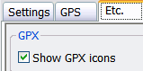
- You can have as many saved files as you wish, there are no limits on the number of saved files.
- Use this for passage planning by saving multiple possible routes for a passage.
- Save routes for historical/log purposes.
-
The Route Manager can do all the tasks described above and more. Right click anywhere on a chart and select Route Manager.
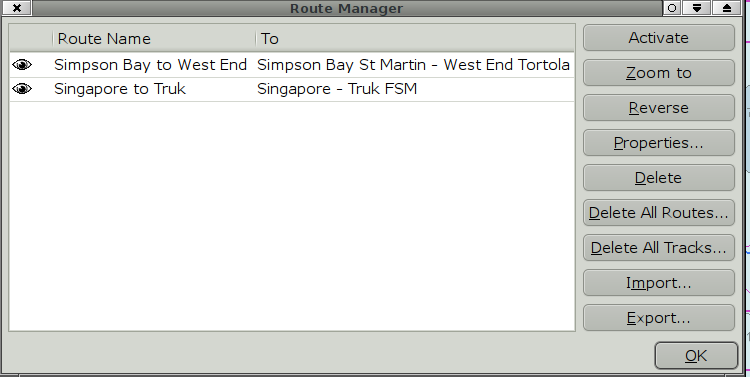 - Activate: Activates a route marked in the left part of the window.
- Zoom to: Zooms in on a route marked in the left part of the window.
- Reverse: Reverses a selected route.
-
Properties:This button brings up a new dialog.

- Delete: Deletes selected route or track.
- Delete All Routes: Be carefull!
- Delete All Tracks: Be Carefull!
- Import: Same as GPX IN button.
- Export: Same as GPC OUT Button.
 This article is in not complete. You are welcome to assist in its construction by editing it as well. Everyone is allowed to edit after creating an account and/or logging in.
This article is in not complete. You are welcome to assist in its construction by editing it as well. Everyone is allowed to edit after creating an account and/or logging in.
TODO: Tracklog?
Planning Data
Creating and Importing Great Circle Routes
GPX import can be used for many things, three sample applications follows below. First, look at this picture. Planning a trip from Cape Town to Freemantle ?
Here you have two imported routes, the Southern route is a pure Great Circle, the middle route is a Composite Great Circle, and then the normal Rhumb Line furthest to the north.
A Great Circle is the shortest distance between two point on the globe. A composite route is the same thing with the additional condition to stay below a limiting latitude, in this case 39°30'S. A rhumb line is a straight line on a Mercator chart. The Mercator projection is the standard for OpenCPN.
- The pure great circle is 4610 nautical miles (M)
- The great circle as plotted with 5° of longitude between the waypoints is 4627 M
- The pure composite route, limited by latitude 39°30’ S is 4651M
- The composite route as plotted with 3° of longitude between waypoints (for the great circles) is 4669 M.
- The rhumb line is 4843 M.
Colder weather, stronger winds, higher seas and perhaps even icebergs. The great circle is just one factor in the decision making when planning a route, the weather is likely to be the deciding factor in most cases.
A great circle route is created with the "gc" Ruby script, that is cross platform.
To create a gpx file containing a great circle you have to enter the departure points lat & long, followed by the destination points lat & long and the optionally a limiting latitude for composite sailing and the distance in long between waypoints, default is set to 5°.
Need to see some offshore weather observations?
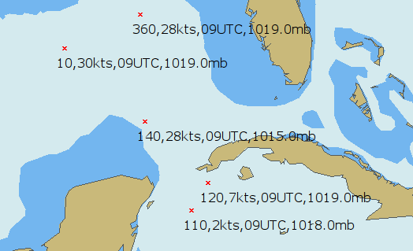
{kind=link}
NOAAs NDBC site gives access to a lot of offshore observations from buoys and ships worldwide.
To easy visualize all this data the "ShipWxRep" script transform a limited set of all the available data into gpx waypoints. The format, as seen above is "wind direction, wind speed, time for observation, and air pressure". This can be helpful when evaluating the accuracy of grib files, even though the best tool in this respect probably is a calibrated digital barometer.
Plotting Miami Tropical Forecast Advisories.
If you only have access to low bandwith internet, this script is a way to quickly plott the contents of, for example an email, containing the forcast advisory. In any case, it is a good idea to have the forecast track of a tropical system available where you normally do your navigation and planning.

Download the scripts here. For some help run each script without arguments.
Toolbox (Settings)

Click this icon to open the Tool Box which has the following.
Settings Tab
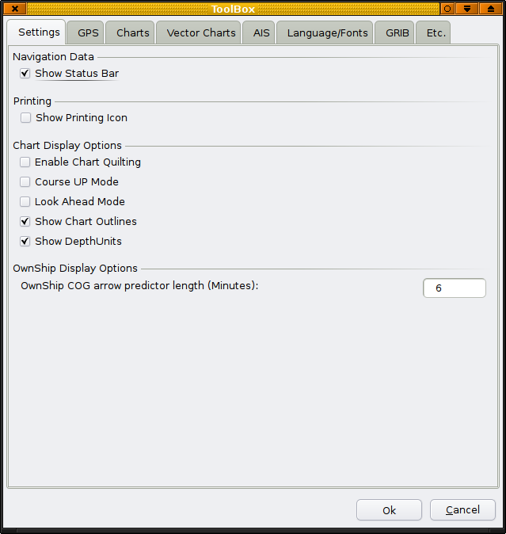
Show Status Bar: The status bar at the bottom of the display contains a lot of navigation information. If you have this inf available elsewhere, turning this setting off increases the available space for the chart.
Show Printing Icon: When you need to print Chartlets
Enable Char Quilting: Has its own page.
Course Up Mode: See this page.
Lookahead Mode: See this page.
Show Chart Outlines: The border of the available charts are shown. Vector charts are green, raster charts are red, and on CM93 available smaller charts are purple. More here.
Show Depth Units: Shows the charts depth units if available. When in quilt mode, depth units are only shown if all charts in the quilt has the same depth unit.
OwnShip COG arrow predictor.....: Shows a red dashed line in front of your own boat, with present COG and ends in a dot, which represents where you will be in the set number of minutes, with the present speed.
The GPS Tab:
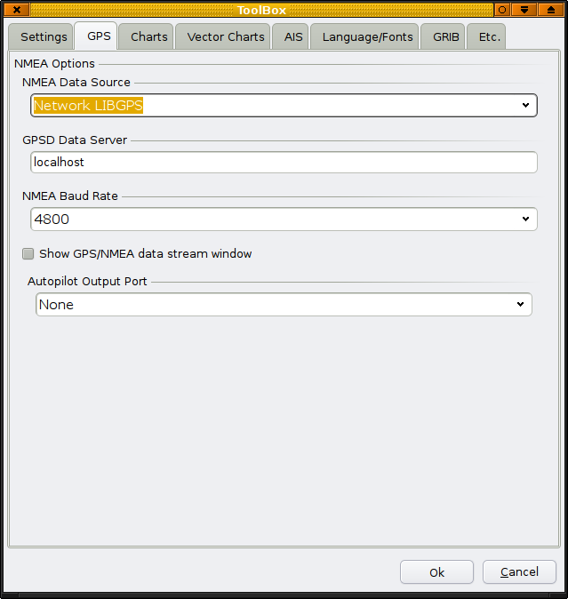
NMEA Data Source: Set the source for your GPS connection.
Details for windows.
In the tab select the 'NMEA Data Source' from the choices shown in the drop-down box, and choose the port to which your GPS is connected. If you are using a standard serial port, then choose the proper physical port number to match. If, on the other hand, you are using a USB GPS, then you will select the virtual serial port which was created by your GPS device driver. You may need to try several selections to find the correct port. For XP/Vista: Using the Device Manager, look for a serial port which appears and disappears dynamically as you plug and unplug the USB GPS cable. This is your virtual GPS serial port. When the properly configured GPS is connected, powered up, and recognized, and a show agreen  icon or gps status icon
icon or gps status icon  in the right end of the tool-bar. OpenCPN automatically configures bits, parity, etc. These do not need to be separately specified.
in the right end of the tool-bar. OpenCPN automatically configures bits, parity, etc. These do not need to be separately specified.
Details for Linux. Connect directly to one of the available physical ports, or use gpsd. For gpsd versions earlier than 2.9, select "Network GPSD" else select "Network LIBGPS".
GPSD Data Server: is normally "localhost", but it's possible to have one gpsd server on a local network with many OpenCPN clients. In this case, specify the network address of the gpsd server. With OpenCPN it's possible to connect even a Windows instance, to a gpsd server this way.
NMEA Baude Rate: 4800 is the normal value for many devices, but some newer gps receivers require a different value. Check your documentation.
Show GPS/NMEA data stream window: If you check this box you will get a window that shows the NMEA data sentences coming into OpenCPN. For simple NMEA data stream debugging, add the following to your opencpn.ini file:Under [Settings] add a line
DebugNMEA=1500
This will provide up to 1500 debug messages pertaining to NMEA traffic to the opencpn.log
Autopilot Output Port: Connect any NMEA 183 compatible autopilot. Select the correct serial port from the list.
The Chart Tab
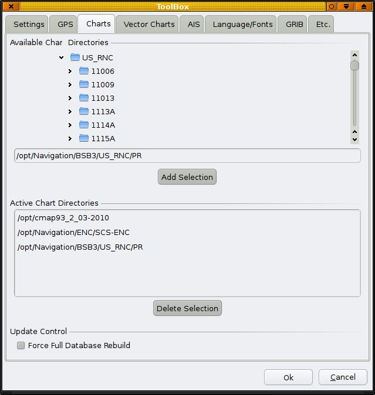
This is treated in detail here.
Vector Charts Tab
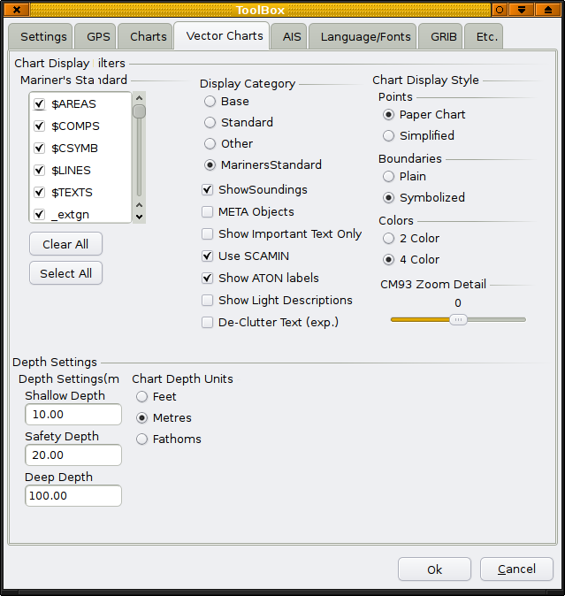
More about vectorcharts on this page.
The AIS Tab
More about AIS.
The Language and Font Tab
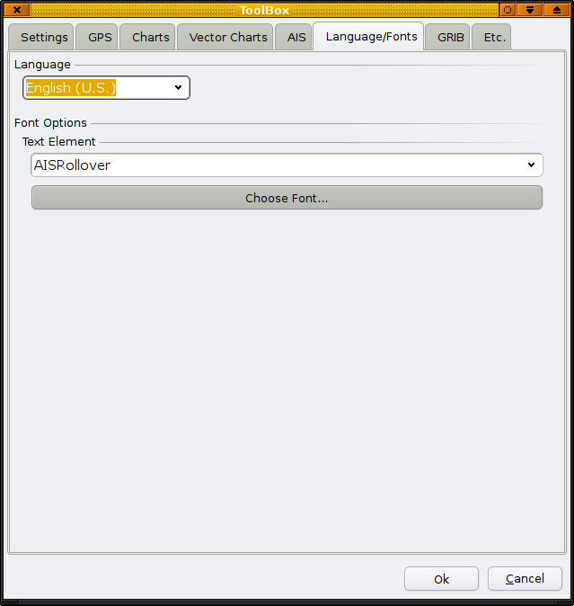
Languages: The following languages are available
Czech
Danish
Dutch
English
French
German
Italian
Polish
Portuguese
Russian
Spanish
Swedish
Choose your language here. Make sure your selected language has the support files installed on your computer (Linux). Default language is US English.
Font Options. Fonts can be selected for some elemets on the display.
The GRIB Tab
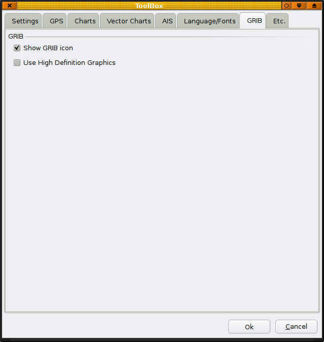
More about Grib files and settings.
The Etc. Tab

Show GPX icons: Show these icons in the Toolbar. More here.
Tracks are described here.
Radar rings: These show up as red rings centered on your gps position, and can be useful in different circumstances, such as keeping clear of dangers. The settings are, hopefully, intuitive.
Waypoint locking. Locks waypoints, and prevents accidental moving of them. This box should normally be ticked when under way.
GUI Options
Enable wheel-zoom-to-cursor: Normally when clicking on the screen, the display centers on the clicked point. The wheel zooms in/out always using the center of the display. With this box ticked, the zooming happens at the point of the cursor. This means that as soon as you start to zoom in the display centers on the cursor.
Preserve scale when switching charts: Normally when switching charts OpenCPN will open the new chart scaled close to it's natural scale, the zoom factor stays the same. With this box ticked OpenCPN will keep the scale from the last chart, when switching, not exactly, but generally of the same magnitude. The zoom-factor will increase as you switches to smaller scale charts.
Play ship bells: Every half-hour the traditional ship bell will be heard.
Vector Chart Display
 This article is in not complete. You are welcome to assist in its construction by editing it as well. Everyone is allowed to edit after creating an account and/or logging in.
This article is in not complete. You are welcome to assist in its construction by editing it as well. Everyone is allowed to edit after creating an account and/or logging in.
NMEA Sentences
OpenCPN Recognized NMEA Sentences:
- HDM - Heading, Magnetic
- HDG - Magnetic heading, deviation, variation
- HDT - Heading, True
-
RMB - Recommended Minimum Navigation Information
- Status, V = Navigation receiver warning
- Cross Track Error - nautical miles
- Direction to Steer, Left or Right
- TO Waypoint ID
- FROM Waypoint ID
- Destination Waypoint Latitude
- N or S
- Destination Waypoint Longitude
- E or W
- Range to destination in nautical miles
- Bearing to destination in degrees True
- Destination closing velocity in knots
- Arrival Status, A = Arrival Circle Entered
-
RMC -Recommended Minimum Navigation Information
- Time (UTC)
- Status, V = Navigation receiver warning
- Latitude
- N or S
- Longitude
- E or W
- Speed over ground, knots
- Track made good, degrees true
- Date, ddmmyy
- Magnetic Variation, degrees
- E or W
-
WPL - Waypoint Location
- Latitude
- N or S (North or South)
- Longitude
- E or W (East or West)
- Waypoint Name
-
RTE - Routes
- Total number of messages being transmitted
- Message Number
-
Message Mode
- c = complete route, all waypoints
- w = working route, the waypoint you just left, the waypoint you're heading to, then all the rest
- Waypoint ID
- More Waypoints
-
GGA - Global Positioning System Fix Data
- Universal Time Coordinated (UTC)
- Latitude
- Longitude
- GPS Quality Indicator
- Number of satellites in view, 00 - 12
- Horizontal Dilution of precision
- Antenna Altitude above/below mean-sea-level (geoid)
- Units of antenna altitude, meters
- Geoidal separation, the difference between the WGS-84 earth
- Units of geoidal separation, meters
- Age of differential GPS data, time in seconds since last SC104
- Differential reference station ID, 0000-1023
- Checksum
-
GLL - Geographic Position, Latitude / Longitude
- Latitude
- N or S (North or South)
- Longitude
- E or W (East or West)
- Time (UTC)
- Status A - Data Valid, V - Data Invalid
-
GSV - Satellites in view
- Number of sentences for full data / sentence 1 of 2
- Number of satellites in view
- Satellite PRN number
- Elevation, degrees
- Azimuth, degrees
- SNR - higher is better / for up to 4 satellites per sentence
- Checksum
-
VTG - Track Made Good and Ground Speed
- Track Degrees
- T = True
- Track Degrees
- M = Magnetic
- Speed Knots
- N = Knots
- Speed Kilometers Per Hour
- K = Kilometres Per Hour
-
VDM - Automatic Information System (AIS) position reports from other vessels
- Time (UTC)
- MMSI Number
- Latitude
- Longitude
- Speed Knots
- Heading
- Course over ground
- Rate of turn
- Navigation status
FAQ
- What are all those 'U' things all over my chart?
The feature being rendered is S57 Text relating to 'M_QUAL'.
This is a meta-object describing the quality of data shown. The Attribute of interest is CATZOC, or "Category of Zone of Confidence". The value on most US ENC's is "6", or "un-assessed". Thus, the 'U'.
You can turn this symbol off in OpenCPN by de-selecting the box next to M_QUAL in 'Tool Box' / 'Vector Charts' tab 'Mariners Standard' selection list box.
To learn the acronyms used in this application search the S57 'Object and Attribute' catalog at: http://www.s-57.com/
- I have routes and way points in Sea Clear and I would like to import them into OpenCPN. Can I do it?
Yes. I had originally created and maintained all my routes and waypoints in SeaClear, exported them, loaded them into GPSUtility (for Windows) and saved them as text files.
To import into OpenCPN I opened all my text files (routes and waypoints) with GPSUtility, saved that out as one big gpx file, and loaded it into OpenCPN. Works like a champ.
I've edited them and saved them back out as GPX files with no trouble.
Individual routes can be edited and saved in appropriately named GPX files.
- Whenever I try to open a particular chart OpenCPN crashes. What's going on?
Chances are the chart file is corrupted. Note the name and number of the suspect chart and replace it with a fresh download.
NOTE: A list of the charts with their names and file names can be found in the README.TEXT that accompanies the charts downloaded from NOOA.
Some unzip utilities for Linux are problematic when opening ECN's. If there are many corrupt charts in your download, try using a different unzip utility.
- OpenCPN and Great Circle Navigation
Raster charts display bearings and headings as straight, measurable lines on the chart. Similarly, Vector ENC's are rendered as Mercator projections in OpenCPN and most other ECS's for the same reason.
For typical coastal navigation, errors which occur using rhumb line instead of great circle calculations are small for the distances usually covered by one chart.
Mercator Charts and Mercator navigation is the standard for most navigational purposes. Other terms used instead of "Mercator Sailing" is "Loxodrome Sailing" or "Rhumb Line Sailing".
OpenCPN uses Mercator Sailing and cannot directly display Great Circles, but through GPX route import , Great Circle Routes can be used as explained on this page in the wiki.
 This article is in not complete. You are welcome to assist in its construction by editing it as well. Everyone is allowed to edit after creating and account and/or logging in.
This article is in not complete. You are welcome to assist in its construction by editing it as well. Everyone is allowed to edit after creating and account and/or logging in.
License and Authors
OpenCPN is licensed under the GNU General Public License (GPL)